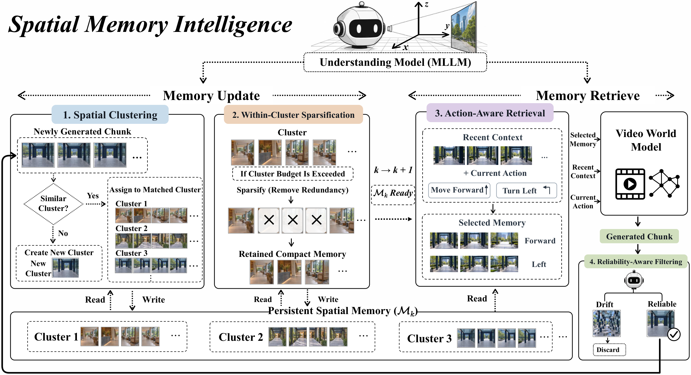
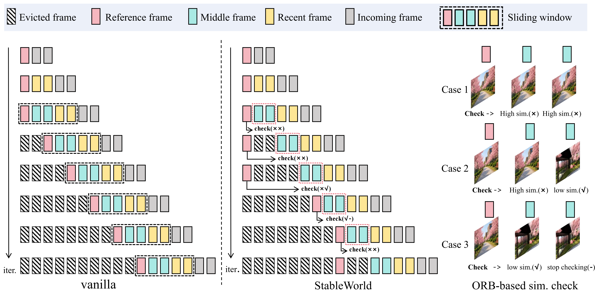

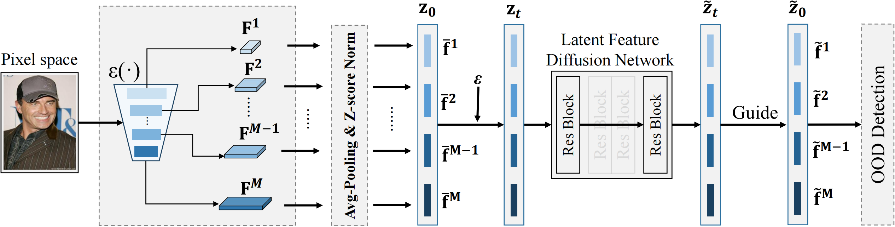

Spatial Memory Intelligence: Endowing World Models with Understanding-Driven Long-Term Memory
An understanding-driven memory manager that organizes, sparsifies, retrieves, and maintains spatial memory for video world models.
Hi! I'm Ying Yang (杨映). I am currently interning at Liblib and The Chinese University of Hong Kong, Shenzhen, where I am supervised by Prof. Li Jiang.
My research interests include generative models, interactive video generation, world models, and embodied intelligence. I aim to build natively multimodal, end-to-end world models and create new interactive virtual media that convey human love and values.
I am seeking PhD opportunities starting in Spring or Fall 2027.
I'm always open to research discussions and collaboration. Reach me by email or WeChat: yyqwe1517.
Papers & ongoing projects

An understanding-driven memory manager that organizes, sparsifies, retrieves, and maintains spatial memory for video world models.

Dynamic frame eviction filters degraded observations to improve stability and temporal consistency in long interactive video generation.

Adaptive logits scaling and energy-based path search improve sampling diversity in bitwise autoregressive image generation.

Diffusion reconstructs multi-layer semantic features to distinguish in-distribution and out-of-distribution samples without labeled training data.
GPA: 92.05/100 (3.9/4.0)Rank: 3/144Xidian University
For research conversations and questions about my work:
yycfq1517@gmail.comWeChat: yyqwe1517